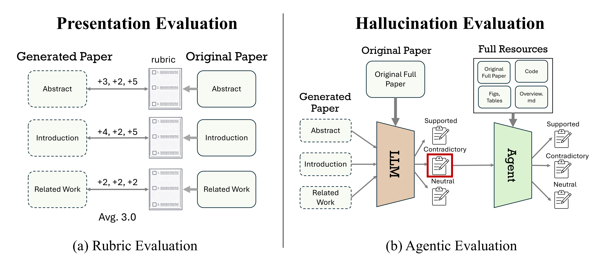

This paper introduces the first systematic evaluation framework for quantifying the quality and risks of papers written by modern coding agents. While AI-driven paper writing has become a growing concern, rigorous evaluation of the quality and potential risks of AI-written papers remains limited, and a unified understanding of their reliability is still lacking.
We introduce Paper Reconstruction Evaluation (PaperRecon), an evaluation framework in which an overview is created from an existing paper, after which an agent generates a full paper based on the overview and minimal additional resources, and the result is subsequently compared against the original paper. PaperRecon disentangles the evaluation of AI-written papers into two orthogonal dimensions: Presentation and Hallucination, where Presentation is evaluated using a rubric and Hallucination is assessed via agentic evaluation grounded in the original paper source.
For evaluation, we introduce PaperWrite-Bench, a benchmark of 51 papers from top-tier venues across diverse domains published after 2025. Our experiments reveal a clear trade-off: while both ClaudeCode and Codex improve with model advances, ClaudeCode achieves higher presentation quality at the cost of more than 10 hallucinations per paper on average, whereas Codex produces fewer hallucinations but lower presentation quality.
Paper Reconstruction Evaluation (PaperRecon) is a framework for evaluating how accurately coding agents can reconstruct scientific papers. From each original paper, we extract the following information and provide it to the agent:
Given these inputs, the agent is tasked with reconstructing the original paper. The generated paper is then compared against the original from multiple perspectives.

Overview of the PaperRecon evaluation pipeline. Presentation evaluation with rubric and agentic hallucination evaluation.
We evaluate generated papers by comparing them against ground-truth (GT) papers along three complementary axes:
Rubric Evaluation
Fine-grained assessment of whether key elements of the original paper are preserved (1-5 scale)
Hallucination Analysis
Two-stage claim-level analysis to detect factual errors and contradictions
Citation Evaluation
F1-based metric comparing citation keys between GT and generated papers
For each GT paper, we pre-construct a rubric specifying key elements expected in each section, along with their relative importance. Each rubric element corresponds to a concrete and verifiable point. An LLM judge evaluates how well the generated section covers each rubric element on a 1-5 scale:
We identify factual errors via a two-stage, claim-level analysis:
Stage 1 (Claim Extraction): An LLM extracts all concrete and verifiable claims and classifies each as Supported, Neutral, or Contradictory (with severity: major or minor).
Stage 2 (Verification): All contradictory claims are aggregated and re-evaluated with a coding agent provided with GT paper resources, reducing false positives.
PaperWrite-Bench is a benchmark of 51 papers manually curated from diverse top-tier conferences published after 2025, enabling comprehensive evaluation of agents' writing capabilities.
51 Papers
From top-tier venues
9 Conferences
Diverse research domains
Papers are collected from: ACL 2025, EMNLP 2025, CVPR 2025, CVPR 2026, ICCV 2025, ICLR 2025, NeurIPS 2025, ICLR 2026, and ACMMM 2025.
Method Papers
32
Benchmark Papers
12
Method + Benchmark
7
Rubric evaluation scores by model and section (1-5 scale).
| Agent | Model | Abs. | Intro. | Rel. | Meth. | Bench. | Exp. | Avg. |
|---|---|---|---|---|---|---|---|---|
| Codex | ||||||||
| Codex | GPT-5 | 4.00 | 3.58 | 2.32 | 2.89 | 3.25 | 3.53 | 3.26 |
| Codex | GPT-5.4 | 4.06 | 3.87 | 2.72 | 3.51 | 3.79 | 3.64 | 3.59 |
| Claude Code | ||||||||
| ClaudeCode | Sonnet 4 | 4.10 | 3.88 | 2.48 | 3.23 | 3.63 | 3.66 | 3.49 |
| ClaudeCode | Sonnet 4.6 | 4.37 | 4.12 | 3.08 | 3.69 | 3.84 | 4.00 | 3.86 |
| ClaudeCode-Teams | Sonnet 4.6 | 4.28 | 4.05 | 3.07 | 3.62 | 3.99 | 3.97 | 3.82 |
Average number of hallucinations (major contradictory claims) per paper.
| Agent | Model | Abs. | Intro. | Rel. | Meth. | Bench. | Exp. | Total |
|---|---|---|---|---|---|---|---|---|
| Codex | ||||||||
| Codex | GPT-5 | 0.3 | 0.6 | 0.3 | 3.8 | 1.9 | 3.4 | 10.2 |
| Codex | GPT-5.4 | 0.1 | 0.3 | 0.2 | 1.3 | 0.2 | 0.9 | 3.0 |
| Claude Code | ||||||||
| ClaudeCode | Sonnet 4 | 0.2 | 0.5 | 0.5 | 5.4 | 0.8 | 4.7 | 12.0 |
| ClaudeCode | Sonnet 4.6 | 0.2 | 0.8 | 0.6 | 4.7 | 0.5 | 3.6 | 10.4 |
| ClaudeCode-Teams | Sonnet 4.6 | 0.3 | 0.6 | 0.8 | 3.9 | 0.5 | 3.8 | 9.8 |
| Agent | Model | Prec. | Recall | F1 | Hal. |
|---|---|---|---|---|---|
| Codex | |||||
| Codex | GPT-5 | 0.89 | 0.27 | 0.39 | 0.0 |
| Codex | GPT-5.4 | 0.86 | 0.43 | 0.56 | 0.0 |
| Claude Code | |||||
| ClaudeCode | Sonnet 4 | 0.75 | 0.24 | 0.34 | 3.5 |
| ClaudeCode | Sonnet 4.6 | 0.83 | 0.58 | 0.67 | 0.2 |
| ClaudeCode-Teams | Sonnet 4.6 | 0.84 | 0.56 | 0.66 | 0.2 |
Claude Code consistently achieves higher presentation scores than Codex across all sections, indicating a stronger ability to capture and articulate key scientific points. However, the best-performing agent (Claude Code with Sonnet 4.6) reaches 3.86, suggesting substantial room for improvement.
Although Claude Code achieves higher presentation quality, it produces a large number of hallucinations, exceeding 10 per paper even with Sonnet 4.6. In contrast, Codex with GPT-5.4 reduces hallucinations to around 3 per paper. These results reveal a clear trade-off between presentation quality and hallucination.
While Claude achieves higher Citation F1 scores, Codex produces substantially fewer hallucinated citations. This highlights a trade-off between citation coverage and factual reliability.
We observe consistent increases in writing quality from Claude Sonnet 4 to Sonnet 4.6, and from GPT-5 to GPT-5.4, demonstrating that PaperRecon effectively tracks progress in writing capability.
We investigate how the granularity of the research overview affects reconstruction quality. The default overview provides a high-level summary (463 words on average), while the long overview includes more detailed descriptions (1,492 words on average).
| Overview | Rubric Eval (higher is better) | Hallucination (lower is better) | ||
|---|---|---|---|---|
| Default | Long | Default | Long | |
| Sonnet 4 | 3.49 | 3.64 | 8.8 | 5.8 |
| Sonnet 4.6 | 3.83 | 4.17 | 9.8 | 2.3 |
More detailed research overviews lead to higher presentation scores and fewer hallucinations, indicating that our evaluation metrics accurately assess paper quality.
| Conference | # Papers | Rubric (higher is better) | Hal. (lower is better) |
|---|---|---|---|
| ML | 21 | 3.58 | 8.3 |
| CV | 21 | 3.63 | 10.1 |
| MM | 5 | 3.47 | 10.7 |
| NLP | 4 | 3.77 | 6.0 |
NLP conferences achieve the highest performance. NLP papers tend to focus more on findings-based research with fewer complex mathematical formulations, making them easier to reconstruct.
Human correlation analysis using 72 pairs of generated papers, judged by 3 expert reviewers from top-tier conferences.
Result: Kendall's τb = 0.578 (p < 0.001), indicating strong alignment between rubric-based evaluation and expert human judgment.
Manual verification of 97 instances labeled as major contradictory from GPT-5, GPT-5.4, and Sonnet 4.6 papers.
Result: 96% precision — hallucinations detected by our method are highly likely to be genuine contradictions or fabrications.